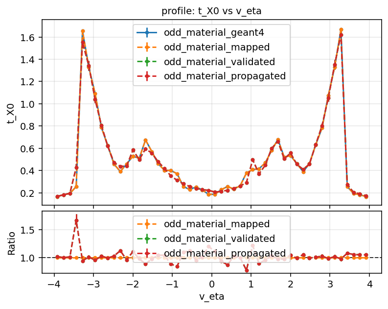

Material mapping workflow (source of truth)
This page is the canonical reference for the ACTS Examples material mapping chain. It explains the end-to-end logic and points to the concrete scripts and tests that define current behavior.
Overview
Material mapping in the Examples pipeline is a three-step process:
- Record material in detailed simulation (Geant4) Shoot particles through the detector's full simulation geometry and store material interactions per track.
- Map recorded material onto ACTS tracking surfaces Collect surfaces configured to carry material (via ProtoSurfaceMaterial in geometry/material configuration), assign recorded interactions to these surfaces, and average into a compact material map.
- Validate mapped material Propagate particles through the detector decorated with the produced map and record material tracks again for comparison against Geant4-based recording.
Scripts (ODD workflow)
The following scripts implement the three stages:
- Recording: Examples/Scripts/Python/material_recording.py
- Mapping: Examples/Scripts/Python/material_mapping.py
- Validation: Examples/Scripts/Python/material_validation.py
Example commands (Open Data Detector):
python material_recording.py -n1000 -t1000 -o odd_material_geant4
python material_mapping.py -n 1000000 -i odd_material_geant4 -o odd_material
python material_validation.py -n 1000 -t 1000 -m odd_material_map.root -o odd_material_validated -p
Step-by-step logic
1) Material recording (material_recording.py)
- Uses Geant4 material recording to create per-track material information.
- Produces a <output>.root ROOT file containing material tracks.
- Typical output for the command above: odd_material_geant4.root.
2) Material mapping (material_mapping.py)
- Reads recorded material tracks (RootMaterialTrackReader).
- Collects mappable surfaces from tracking geometry (trackingGeometry.extractMaterialSurfaces()).
- Builds assignment/accumulation components and performs averaging onto the selected surfaces.
- Writes mapped outputs using the chosen output stem:
- <stem>_map.root and/or <stem>_map.json
- <stem>_mapped.root
- <stem>_unmapped.root
3) Material validation (material_validation.py)
- Decorates geometry from --map, then validates material response by producing material tracks from mapped material.
- Writes <output>.root with collection material_tracks by default.
- -p / --propagate enables an additional propagation/navigation-based collection, written as <output>_propagated.root, useful to expose potential navigation-related effects in material collection.
Comparison example
The figure below overlays Geant4, mapped, validated, and propagated profiles for t_X0 vs eta, with a ratio panel.

Overlay and ratio for material profiles.
Tests that guard this workflow
Primary tests live in Python/Examples/tests:
- Python/Examples/tests/conftest.py
- material_recording_session fixture generates reusable Geant4 material tracks.
- Python/Examples/tests/test_examples.py
- test_material_recording
- test_material_mapping
- Python/Examples/tests/root_file_hashes.txt
- Reference hashes for workflow outputs.
These tests are the executable reference for expected output structure and regression tracking.